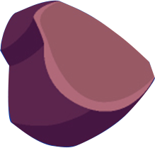

Mercúrio é o menor e mais interno planeta do Sistema Solar, . A sua órbita tem a maior excentricidade e o seu eixo apresenta a menor inclinação em relação ao plano da órbita dentre todos os planetas do Sistema Solar.
Vénus ou Vênus é o segundo planeta do Sistema Solar em ordem de distância a partir do Sol, orbitando-o a cada 224,7 dias. Recebeu seu nome em homenagem à deusa romana do amor e da beleza Vénus, equivalente a Afrodite.
A Terra é o terceiro planeta mais próximo do Sol, É por vezes designada como Mundo ou Planeta Azul. Lar de milhões de espécies de seres vivos, incluindo os humanos, a Terra é o único corpo celeste do universo onde é conhecida a existência de vida.
Marte é o quarto planeta a partir do Sol, o segundo menor do Sistema Solar. Batizado em homenagem ao deus romano da guerra, muitas vezes é descrito como o "Planeta Vermelho", porque o óxido de ferro predominante em sua superfície lhe dá uma aparência avermelhada.
Júpiter é o maior planeta do Sistema Solar, tanto em diâmetro quanto em massa, e é o quinto mais próximo do Sol. Possui menos de um milésimo da massa solar, contudo tem 2,5 vezes a massa de todos os outros planetas em conjunto e é um planeta gasoso.
Saturno é o segundo maior planeta do Sistema Solar, atrás apenas de Júpiter. Ambos pertencem ao grupo dos gigantes gasosos, de forma que possuem características similares. O planeta é formado predominantemente por hidrogênio e hélio, além de um provável núcleo rochoso.
Urano é o sétimo planeta a partir do Sol, o terceiro maior e o quarto mais massivo dos oito planetas do Sistema Solar. Embora seja visível a olho nu em boas condições de visualização, não foi reconhecido pelos astrônomos antigos como um planeta, somente em 1781.
Netuno é o oitavo planeta do Sistema Solar, o último a partir do Sol desde a reclassificação de Plutão para a categoria de planeta anão, em 2006. Pertencente ao grupo dos gigantes gasosos, com uma massa equivalente a 17 massas terrestres.